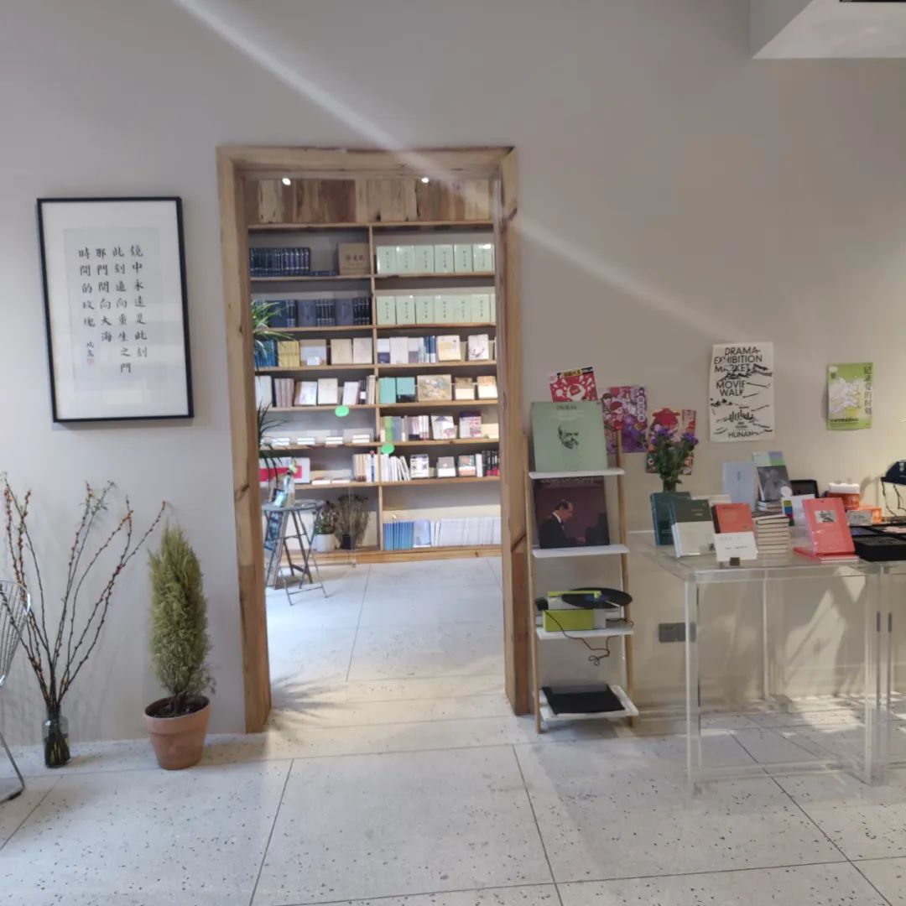
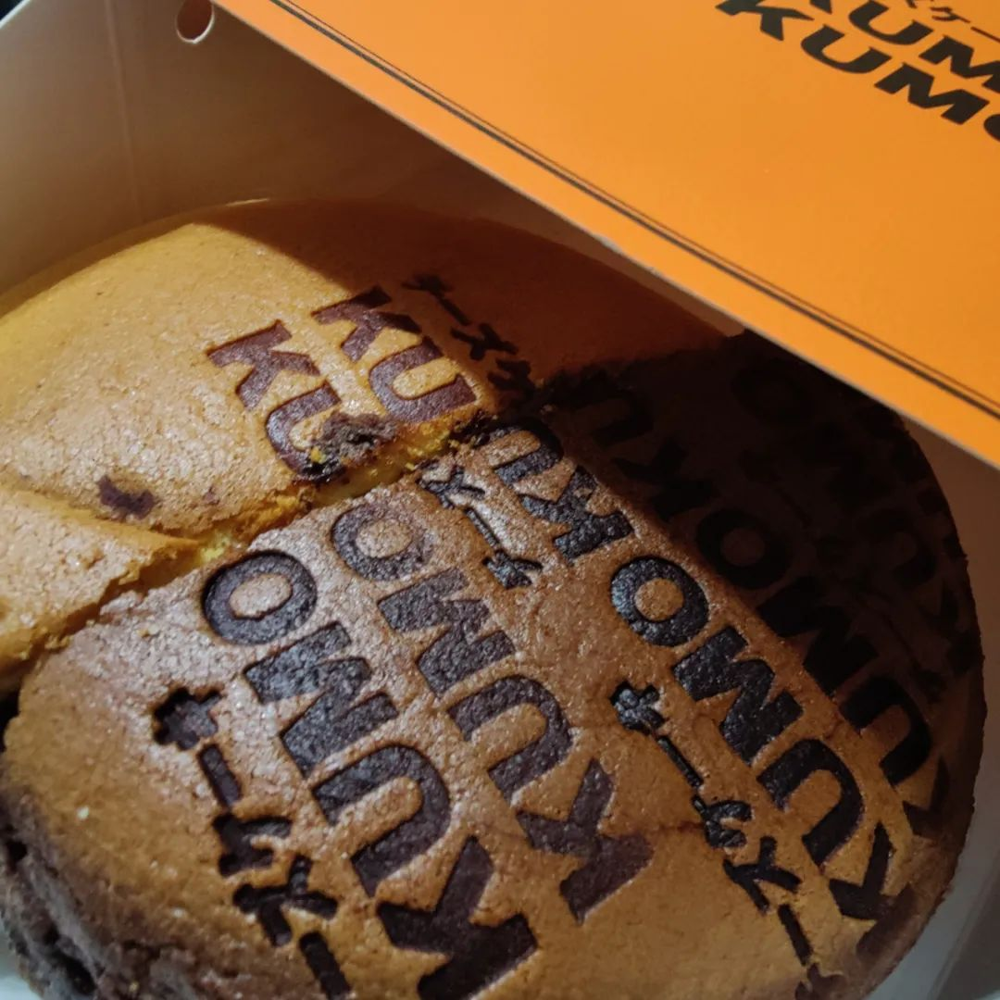

本文是张衔瑜第228篇推文
共计2024个字，181张图
严肃娱乐或轻松娱乐的心思都在强榨现当代人类的基本作息节律。用例证结构来翻译成人能理解的话就是：睡觉前不把所有的红点都点一遍的话，是不会睡觉的。
小时候有一些游戏，举例是因为更典型，但这种典型只是我脑海里的典型。差不多就是这一个关卡过完，除了Basic Pass像植物大战僵尸，僵尸不能eat your brain之外，还有类似Produce 3500 sun orprotect the endanger plants这样的Bonus Goal. 一类心理是，如果打完这一关之后发现完不成这一个关卡的全部任务，那么即使可以也不会继续到下一关去。
恐惧和强迫应该都来参与了这一事件，尽管并不止于到很高的程度。
· 写论文写到哭的人，咆哮：“今天再不喝双倍糖的桂花弄我可能会死啊！！”
· 一天到晚在地里的农民，邻居不好意思说他执拗，毕竟是糊口所指。“好像回家里了，也没有什么奔头。”
· 睡觉前点完了所有红点的上班族，你以为ta真的可以休息了吗？紧张的状态下，ta又再点开了其中几个自以为重要的群组，对几个语段进行反复研读。
—— 人们有时候把这叫做遗憾补偿
体力真的榨干了，或者某个部位的疼痛在警告人类不要再受缚于自己创造出来的产品时。应该这时候就会睡觉了吧。虽然这么说起来，可能看着觉得很遗憾，但每一个体验过的人在醒来的时候都不会有什么不适感，也就是说不遗憾。那么到底在前一天什么程度上的时候，就已经不遗憾了呢？
搞认知科学的书，如果像我一样写到这里了的话，往往就会开始介绍自己做了个什么实验。我没有，因为我不会。
本质上来说，我没打算在这次的推文里又接着讲道理。写很长的一段，描述一个我也不甚清楚的内容。而且我也真的蛮久没有发过一些日常的图了。等我找找来。
接下来就去公众号里写了，不在Word里面写
3.12 徐秉龙长沙站加场


46Livehouse旁边有长沙市第一家聋人咖啡店，自助点单。我每次路过都会想点一杯

也算是个小支持吧
只不过有的时候他们并没有开，比如上一周的周四。我在过去的路上付款，想着到了就可以拿到。结果小程序上下单成功了，但是去了之后没有开门。也不知道为什么，敲了下门，觉得自己好笑，人家又听不见。旁边老百姓大药房的也不知道，于是作罢，上岳麓山去。
这是一盘蕨
我没觉得杨掌柜的粉面菜蛋有多好吃

白象比较好吃

得闲拍花

吃光头粉不会变光头


18号小酒馆的长沙店


附近的茶颜关门了，这家我喝太多次


是谁住在深海的大菠萝里


炎玲冰室(这个杨枝甘露约等于沙冰倒也蛮好吃的而且漏奶华很漂亮


意外进入

小陪伴

大霸缸。那时候疫情管理堂食管得严，所以就在空调外机上面吃

轻松毕业

继续说读书的事。岳麓山后山，我的认知地图里常常认为那里是党校。这是茶场村的镜中书店




曾经的手机锁屏，因为觉得很像夏尔袋底洞My Precious的那种风格


舒坦了就可以接着吃。三哥蒸菜最近去吃了好多，而且有人问我最近的推荐，我就都会讲这家店。便宜，而且的确很好吃。甚至还有仪式感。
蒸菜店是那种一个蒸笼里有很多层，每一层里面放了约莫十几个碗。这个蒸笼没蒸熟之前不会开，所以想吃到自己想要的菜的话，就得准点去。老板每天中午十一点四十到十一点五十之间开蒸笼，晚上五点半准时开蒸笼。然后一大堆人端着盘子，围在蒸笼旁边，打开一格拿走一些，打开一格拿走一些。
吃味的确不错，不过就是正常湘菜的那样。作为湘菜原住民，我们自然是挑剔的。所以这时候就喜欢有一些其他元素的加入，比如一些恪守时间的仪式感。图为我们排开九文大碗，当天只蒸了两份肉饼蒸蛋，所以我们请店员去帮忙拿的时候 ta都没有拿得到。


另一次
放风筝


搞运动


吃得疲劳了。三月三，上巳节，我开始随便组合不同时候的图片了


北辰的日料、冰淇淋？？、？？？


我好困啊。不想写了，记录变成了空谈

和哥哥一起去盗墓笔记的开场白，长沙豹子岭
吃红烧肉(不是吃粽子
这个肉是真的好吃，吐血推荐


我把我有的这些帆布鞋集合起来，看看有多少。然后按照新旧程度和颜色重新组合了一下，于是又多了很多鞋子。每一双都很便宜的鞋子，三十几块钱不到四十块钱一双，被最大化用完了价值。

吃小片pizza


紫苏桃子姜柠檬水。我说不好喝，朋友们说好喝。“们”refer to两个人
就在这个烧烤旁边不远


吃自助
吃火锅


别吃了，来蹦


蹦啊都站着干嘛。交了钱来这听歌罚站啊？


不蹦的都滚出克。真觉得彩文是投屏上做得最creative的一个乐队


蹦累了，休息。吃点


我笑嗬嗬(feat.花鼓戏调


(健身房不知道谁的修勾)


最后吃个生煎和芝士蛋糕吧



上一次湘西游记中，很多人提了那张洪江印刷厂。于是按照学妹推荐的Dream by WOMBO生成了一张赛博朋克风格的图，现在是我新的手机壁纸。
三四五月份里用手机拍的大致就这么多了。乐队的，已经在上一次的推文里说过，这次就只给照片。其他的，文字的就更多送到文字单篇去。只是图没法割开，不然我也想那么做, from the view of efficiency. 相机里的再说。
荣格的《红书》读起来就跟高二的时候看尼采的《查某碎碎念》一样浪漫离谱，不过没有那些唯意志论者的一份暴戾。顺便德意志第三帝国的第二本理想国快看完了，同时在看卡夫卡的《变形记》的短篇小说集，那一篇已经看完了。似乎出版书就喜欢这样，把提的最多的放名字，其实里面都是别的小说，和原来的出版差别不小。
文盲今天先写到这里。